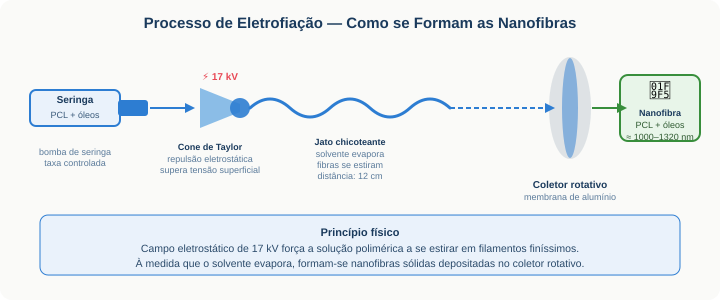
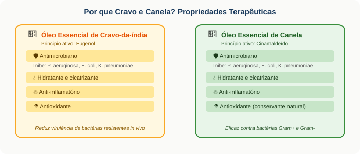
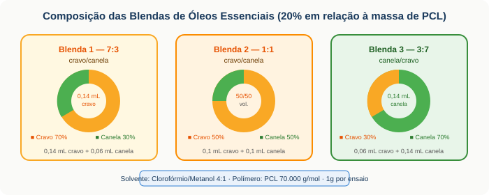
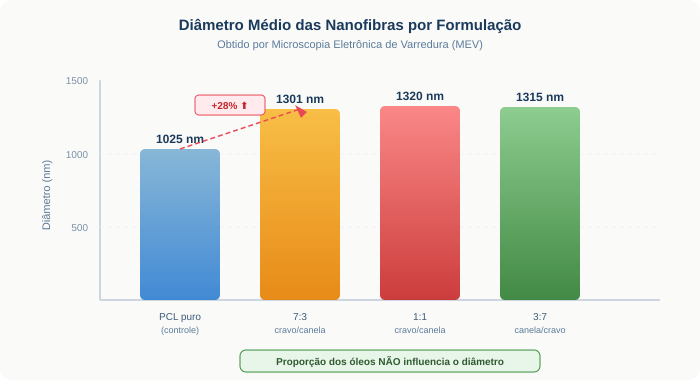
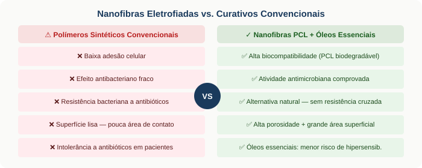

O problema: curativos sintéticos têm limites sérios
Úlceras de pressão, escaras e feridas cutâneas crônicas afetam milhões de pessoas hospitalizadas ou em cuidado domiciliar. Os curativos disponíveis devem absorver exsudato, manter a ferida úmida, aliviar a dor e combater infecções — mas os polímeros sintéticos convencionais falham justamente na atividade antimicrobiana e na adesão celular, retardando a cicatrização.
A solução estudada combina o processo de electrospinning (eletrofiação) com óleos essenciais de cravo-da-índia e canela — dois produtos de origem agrícola com propriedades antimicrobianas, antioxidantes e cicatrizantes amplamente documentadas desde a Antiguidade.
A tecnologia: como a eletrofiação cria nanofibras
A eletrofiação é um dos processos mais simples e versáteis para produzir fibras na escala de nanômetros. Um campo eletrostático de alta tensão força a solução polimérica a se estirar em filamentos finíssimos que se depositam num coletor rotativo, formando uma membrana porosa flexível.

Formação do Cone de Taylor
O campo eletrostático repele cargas na superfície da gota polimérica, deformando-a em formato cônico. Um cone bem formado garante nanofibras uniformes e sem grânulos.
Ejeção e Estiramento do Jato
A repulsão supera a tensão superficial: um jato emerge e é continuamente estirado em diâmetros cada vez menores, num fenômeno de "chicoteamento" elástico.
Evaporação do Solvente
O clorofórmio/metanol evapora rapidamente durante o trajeto do jato até o coletor (12 cm), solidificando as fibras antes da deposição.
Deposição e Formação da Membrana
As nanofibras sólidas se depositam sobre o coletor rotativo de alumínio, formando uma membrana flexível pronta para uso como curativo dérmico.
Cravo e canela: farmácia da natureza

A combinação dos dois óleos em blenda busca ampliar o espectro antimicrobiano e aumentar a estabilidade dos compostos ativos dentro da matriz de PCL — aproveitando possível efeito sinérgico entre eugenol e cinamaldeído.
Como o estudo foi conduzido

Foram preparadas quatro soluções ao total: uma de PCL puro (controle) e três com blendas de óleos nas proporções 7:3, 1:1 e 3:7 (cravo/canela em volume). Cada solução foi eletrofiada sob os mesmos parâmetros (17 kV, 12 cm), e as membranas resultantes foram analisadas por Microscopia Eletrônica de Varredura (MEV) para medir os diâmetros médios das nanofibras.
Resultados: a blenda aumenta o diâmetro, mas não a proporção

| Formulação | Diâmetro médio (nm) | Variação vs. controle |
|---|---|---|
| PCL puro (controle) | 1025 nm | — |
| PCL + Blenda cravo/canela 7:3 | 1301 nm | +27% ⬆ |
| PCL + Blenda cravo/canela 1:1 | 1320 nm | +29% ⬆ |
| PCL + Blenda canela/cravo 3:7 | 1315 nm | +28% ⬆ |
Aumento de 28% no diâmetro
A adição de óleos essenciais altera a evaporação do solvente, aumentando a massa depositada por fibra — independente da proporção cravo/canela utilizada.
Proporção dos óleos: indiferente
Os três diâmetros (1301, 1320 e 1315 nm) são estatisticamente equivalentes — a razão cravo/canela não impacta a morfologia das nanofibras.
Superfície mais suave ao toque
Membranas com blenda apresentaram superfícies subjetivamente mais lisas que o PCL puro, mas com maior rugosidade nas micrografias MEV.
Rugosidade aumentada no MEV
Com a adição da blenda, houve aumento perceptível na rugosidade das nanofibras em todas as proporções — favorável à adesão celular.
Por que nanofibras? Vantagens sobre curativos convencionais

O que fica e o que vem a seguir
O estudo demonstrou a viabilidade técnica da produção de nanofibras de PCL incorporadas a blendas de óleos essenciais de cravo e canela. As membranas obtidas apresentam potencial considerável para aplicação em lesões cutâneas — com ação antimicrobiana, hidratante e anti-inflamatória simultâneas.
- Apenas diâmetro das nanofibras foi avaliado — propriedades mecânicas, permeabilidade e absorção de exsudato ainda não foram medidas.
- Nenhum teste biológico (citotoxicidade, halo de inibição, cicatrização in vivo) foi realizado nesta fase.
- A atividade antimicrobiana dos óleos após a eletrofiação não foi confirmada — o processo pode degradar compostos voláteis.
- Estudo de estabilidade das nanofibras em condições de armazenamento e uso não foi conduzido.
Apesar das limitações, o trabalho representa uma contribuição relevante à literatura de curativos bioativos sustentáveis — demonstrando que materiais de origem agrícola, como cravo e canela, podem ser integrados a processos biotecnológicos de ponta como a eletrofiação.